<!DOCTYPE html>
<html lang="en">

<head>
    <meta charset="UTF-8">
    <title>INSPIRATION | THAN TRONG HIEN</title>
    <link rel="stylesheet" href="reset.css">
    <link rel="stylesheet" href="fonts/stylesheet.css">
    <link rel="stylesheet" href="style.css">
</head>

<body>
    <div style="width: 1150px; margin: 0 auto;">
        
        <table style="margin: 100px auto;width: 1150px; text-align: left; margin-left: 50px;">
            <tr>
                <td width="350px" style="">
                    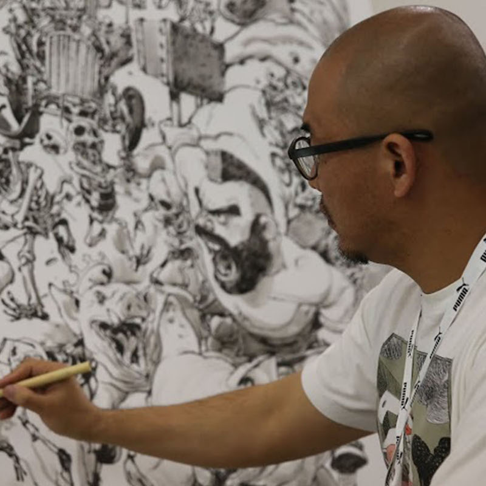
                    <h1>KIM JUNG GI</h1>
                    <p>A Korean artist born in 1975 in Goyang-Si.He has the ability to visualize the drawing before making his marks. With mental pictures, he can draw without a photographic reference!
                        <br>
                        <br>I admire his illustration style and skills. The drawings look neat but sketchy at the same time and have a very clear feeling about space. A real master!</p>
                </td>
                <td width="50px"></td>
                <td width="350px" style="">
                    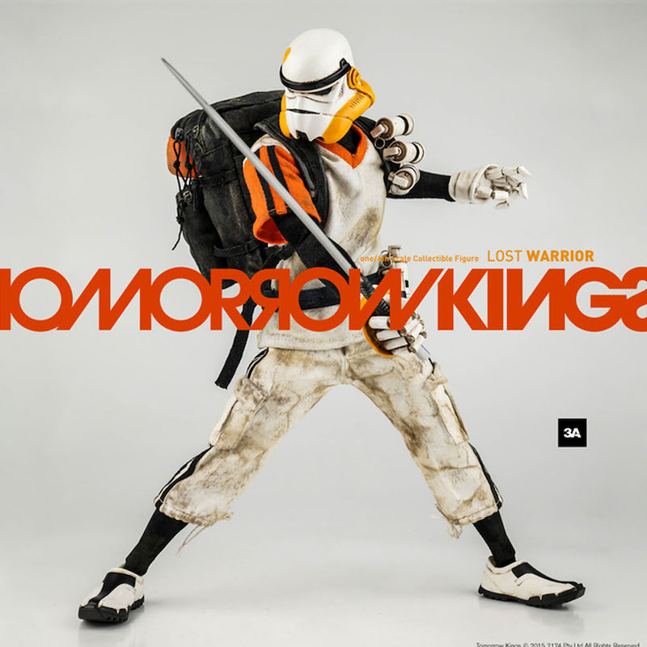
                    <h1>WORLD OF 3A</h1>
                    <p>3A is a toy, publishing and entertainment company founded in 2008 by Kim Fung Wong and Ashley Wood. They produce the best action-figures in the world.
                        <br>
                        <br>I love the way they design the characters and also, the package design is brilliant.</p>
                </td>
                <td width="50px"></td>
                <td width="350px" style="">
                    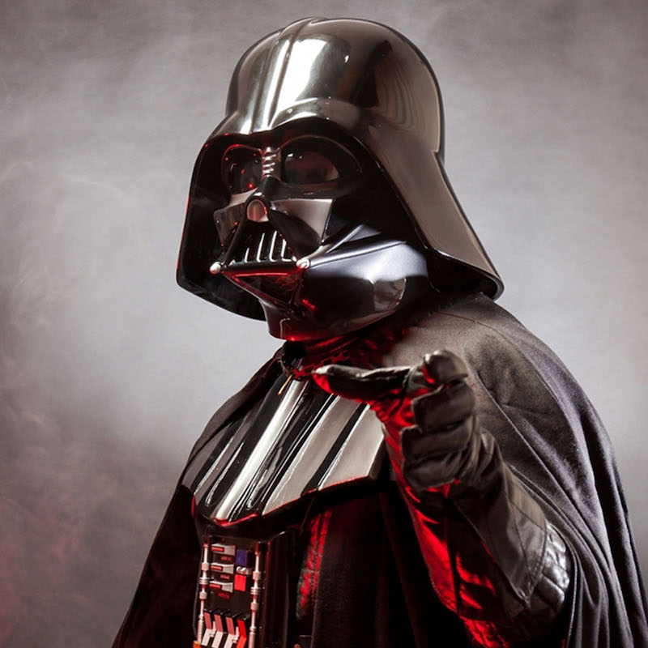
                    <h1>STAR WARS</h1>
                    <p>Star Wars is an American epic space opera franchise, centered on a film series created by George Lucas.
                        <br>
                        <br>I actually has not seen all the parts of this series. However, I do love the character design very much as it brings me a lot of ideas about space war theme. </p>
                </td>
            </tr>
            <tr>
                <td width="350px" style="">
                    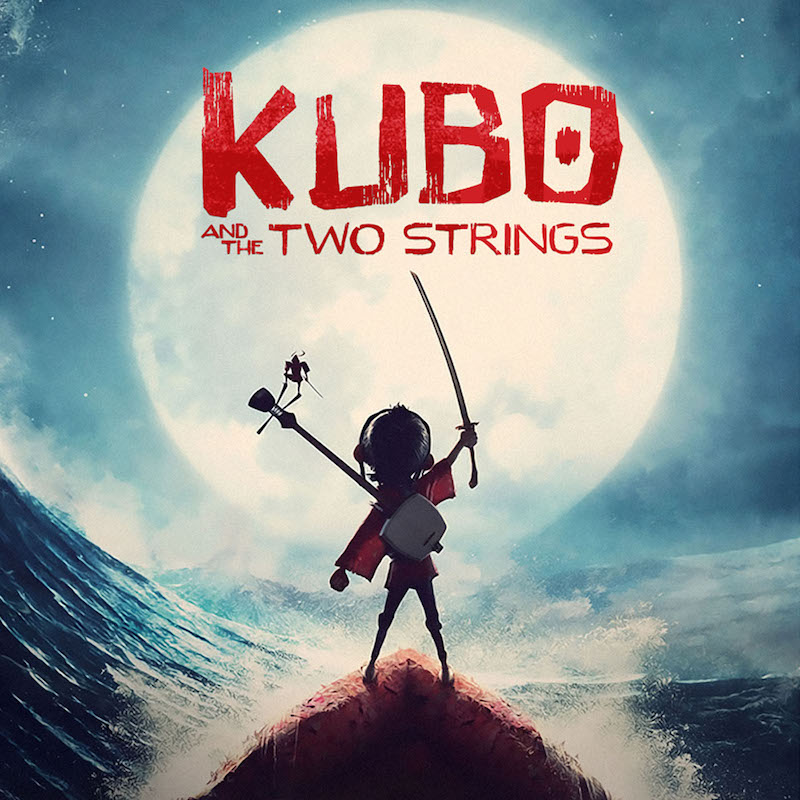
                    <h1 style="font-size: 45px">Kubo  Two Strings</h1>
                    <p>Kubo and the Two Strings is a 2016 American 3D stop-motion fantasy action-adventure film directed and co-produced by Travis Knight (in his directorial debut), and written by Marc Haimes and Chris Butler.
                        <br>
                        <br>I even love this film more after I see the Behind the Scene that shows the progress of making this stop motion movie step by step. I really admire their imagination and patience.</p>
                </td>
                <td width="50px"></td>
                <td width="350px" style="">
                    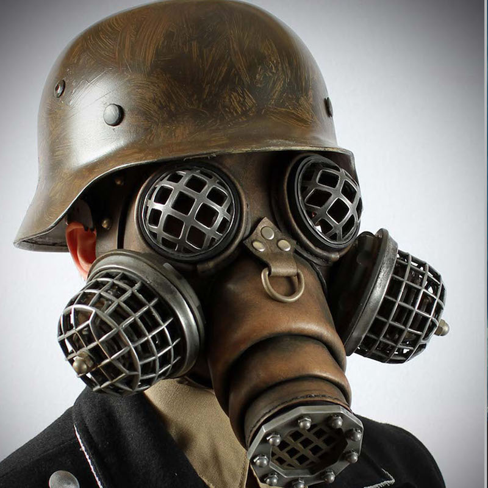
                    <h1>STEAMPUNK</h1>
                    <p>A genre of science fiction that typically features steam-powered machinery rather than advanced technology.
                        <br>
                        <br>I enjoy this kind of steam-tech more than the futuristic one as it looks more classic and much cooler in my opinion.</p>
                </td>
                <td width="50px"></td>
                <td width="350px" style="">
                    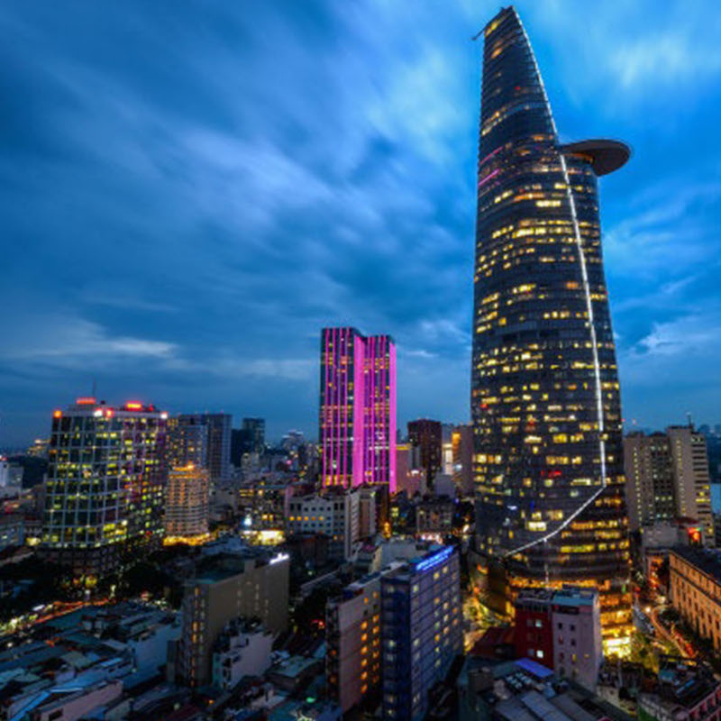
                    <h1>saigon</h1>
                    <p>The largest and busiest city in Vietnam, also known as Ho Chi Minh City.
                        <br>
                        <br>I am inspired by its modern beauty and also the simple way people live and be nice to each other. Plus, if you look back to the past, Saigon used to be like a small New York, with a lot of charming classic designs.</p>
                </td>
            </tr>
            <tr>
                <td width="350px" style="">
                    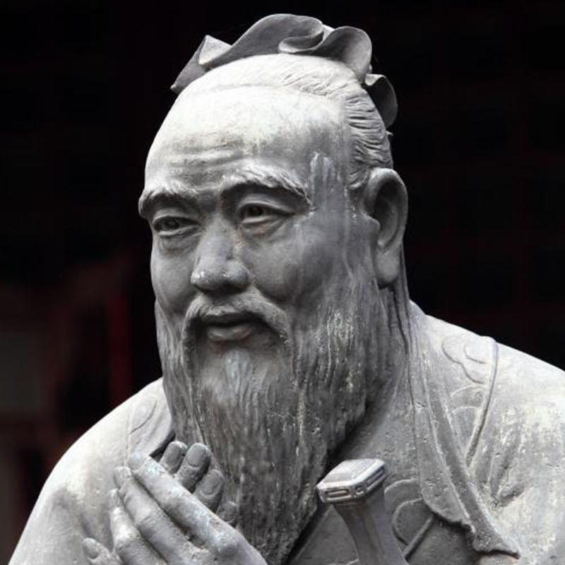
                    <h1>confucius's quote</h1>
                    <p>“A journey of a thousand miles begins with a single step”This great quote always remind me that I have to try harder and harder every singleday to gain more experience for my life trip.</p>
                </td>
                <td width="50px"></td>
                <td width="350px" style="">
                    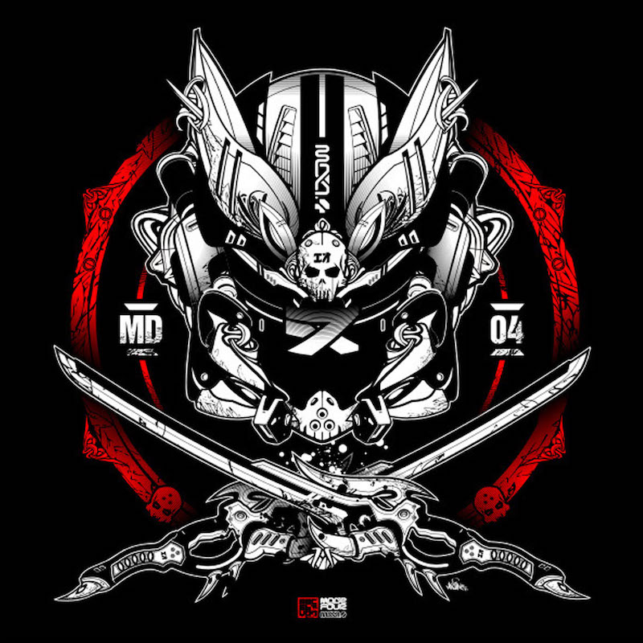
                    <h1>machine56I</h1>
                    <p>A company in Indonesia that design supercool hoodies, helmets and toys.Their character design is insanely brilliant with all the weapon and armor details. I enjoy their samurai/ninja style characters a lot.</p>
                </td>
                <td width="50px"></td>
                <td width="350px" style="">
                    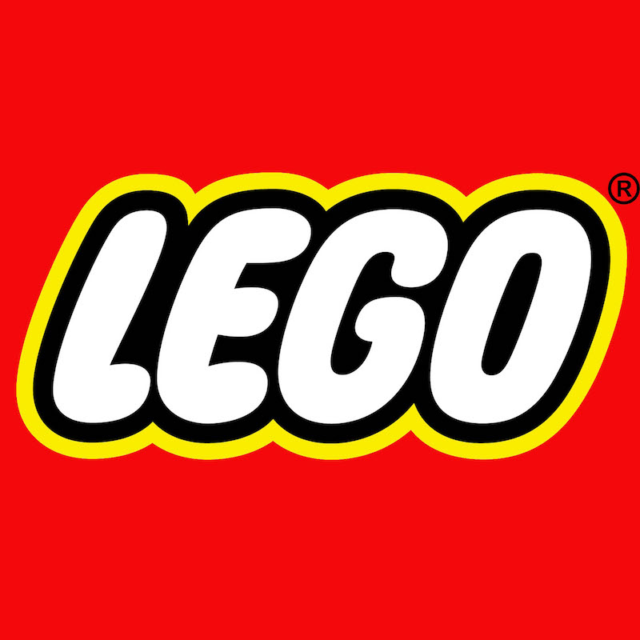
                    <h1>lego</h1>
                    <p>A Danish family-owned company based in Billund, Denmark.I’m inspired of their startup story. They never give up and always try to change the game with their very unique ideas.</p>
                </td>
            </tr>
            <tr>
                <td width="350px" style="">
                    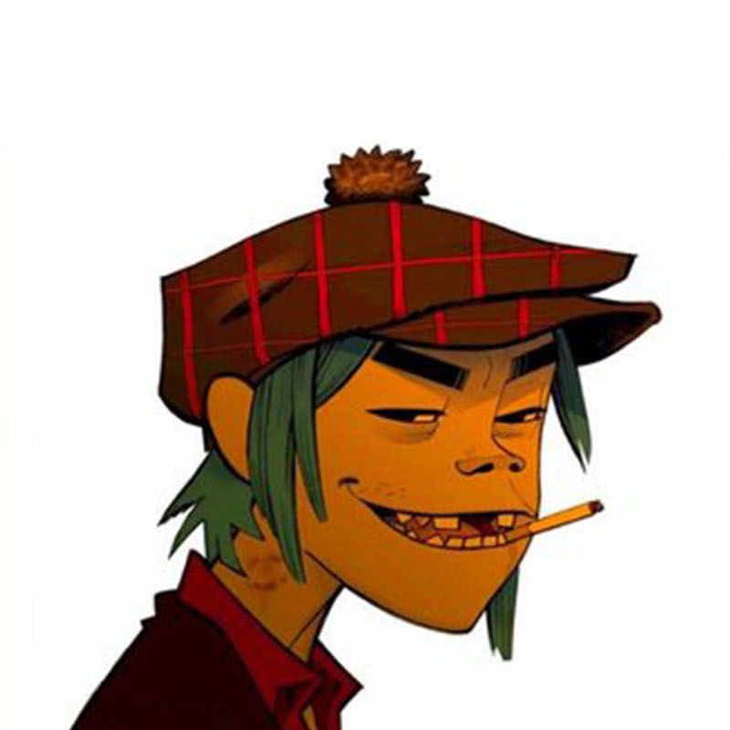
                    <h1>gorillaz</h1>
                    <p>Gorillaz is a British virtual band with 4 animated members.
                        <br>
                        <br>And they’re cool as hell with their songs and animation style. I always feel good watching their MV.</p>
                </td>
                <td width="50px"></td>
                <td width="350px" style="">
                    
                    <h1>duong ve</h1>
                    <p>My favorite indie rock album from Quai Vat Ti Hon (Tiny Monster) band.<br><br>This album has great lyrics about life and unique melodies. These songs bring me really good mood for night working time.</p>
                </td>
                <td width="50px"></td>
                <td width="350px" style="">
                    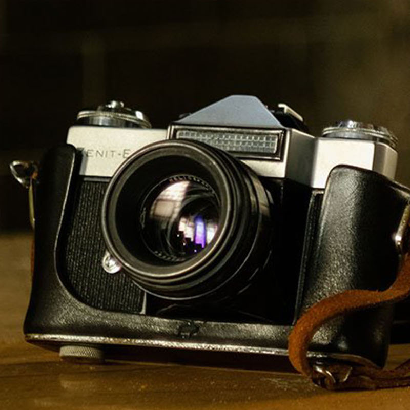
                    <h1 style="font-size: 50px">FILM photography</h1>
                    <p>AI would love to use a film one as most film cameras I used really bring the ‘moments, the atmostphere into the photos. Every detail and color is truly what it is in real life. That’s why I’m inspired a lot by film photos but not digital ones.</p>
                </td>
            </tr>
        </table>
    </div>
</body>

</html>
